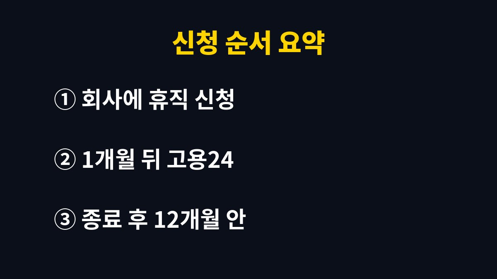

육아휴직급여 신청 방법은 사업주에게 휴직을 알린 뒤 휴직 시작 1개월이 지난 때부터 종료 후 12개월 안에 고용24나 고용센터에서 급여를 신청하는 순서다.
2026년 11월 기준으로 공개된 안내에서 지급 구간과 자격, 서류를 가려 정리했다.
2025년부터 사후지급금이 없어져 휴직 중에 전액이 지급되는 점이 이전과 달라진 부분이다.
휴직 시작일 기준 통상임금에 지급률을 곱하고, 상한을 넘으면 상한액을 받는다.
기본급과 매달 정해져 나오는 수당이 중심이고, 성과급이나 연장근로수당처럼 달라지는 돈은 보통 빠진다.
지급률은 1~6개월이 통상임금 전액, 7개월째부터 80%다.
| 기간 | 월 상한액 | 지급률 |
|---|---|---|
| 1~3개월 | 250만 원 | 통상임금 전액 |
| 4~6개월 | 200만 원 | 통상임금 전액 |
| 7개월째부터 | 160만 원 | 통상임금 80% |
자격은 만 8세 이하 또는 초등학교 2학년 이하 자녀를 키우고, 육아휴직을 30일 이상 쓰고, 휴직 시작 전 고용보험 피보험 단위기간이 180일 이상이어야 한다.
이직한 지 얼마 안 된 상태에서 휴직하면 이 180일에서 걸릴 수 있다.
예를 들어 월 통상임금이 상한보다 높은 사람은 1~3개월에 250만 원까지만 받는다.
반대로 통상임금이 상한보다 낮으면 계산한 금액을 그대로 받는다.
하한액은 공식 안내에서 따로 확인해야 하며 이 글에서는 금액을 적지 않는다.
휴직 기간은 기본 1년이고, 부모가 각각 3개월 이상 쓰거나 한부모, 중증 장애아동의 부모이면 1년 6개월까지 늘어난다.
늘어난 6개월은 7개월째 이후 구간인 80%, 상한 160만 원이 적용된다.
휴직 시작 예정일 30일 전까지 사업주에게 신청하는 것이 원칙이다.
사업주가 육아휴직 확인서를 고용센터에 내야 급여 신청이 이어진다.

급여는 한 번에 몰아서 신청해도 되지만, 매달 신청하면 휴직 중 생활비 흐름을 맞추기 쉽다.
통상임금 확인 자료는 급여명세서처럼 회사가 가진 서류에서 나오는 경우가 많아, 인사 담당자에게 미리 요청해 두면 신청 날 막히지 않는다.
온라인이 어려우면 관할 고용센터를 방문해도 된다.
문의는 고용노동부 고객상담센터 1350이다.
자녀가 생후 18개월 안일 때 부모가 동시에 또는 차례로 휴직하면 각자 첫 6개월에 더 높은 상한이 적용된다.
1~6개월째 월 상한이 250만·250만·300만·350만·400만·450만 원으로 올라간다.
7개월째부터는 일반 기준과 같은 160만 원이다.
적용 시점을 잘못 잡으면 혜택이 줄어서, 자녀 생후 18개월 안에 휴직이 시작되는지부터 달력으로 세어 본다.
휴직이 끝난 날 이후 12개월이 지나면 받을 수 없다.
복직하고 바빠서 미루다 놓치는 경우가 가장 아깝다.
복직일을 달력에 적고 그 날짜에 12개월을 더한 날을 신청 마감으로 따로 표시해 두면 놓칠 일이 줄어든다.
다른 곳에서 일하거나 소득이 생기면 신고해야 한다.
알리지 않고 받으면 반환하고 추가 징수를 당할 수 있다.
2026년 8월 20일부터 시행된 1~2주 단기 육아휴직은 별도 기준이 있고 급여액도 공식 안내에서 따로 확인해야 한다.
일반 육아휴직 구간표를 그대로 대입하면 금액이 어긋날 수 있다.
휴직 계획이 잡혔다면 먼저 회사 인사팀에 휴직 확인서 발급 일정을 물어본다.
상한액과 지급 구간은 해마다 바뀔 수 있어서 신청 전에 고용24의 최신 안내를 한 번 더 대조한다.
※ 2026년 11월 기준 공개된 정보를 정리한 글이며, 정확한 대상 요건·금액·신청 기간은 복지로·정부24·관할 주민센터의 공식 공고를 확인하길 바란다.